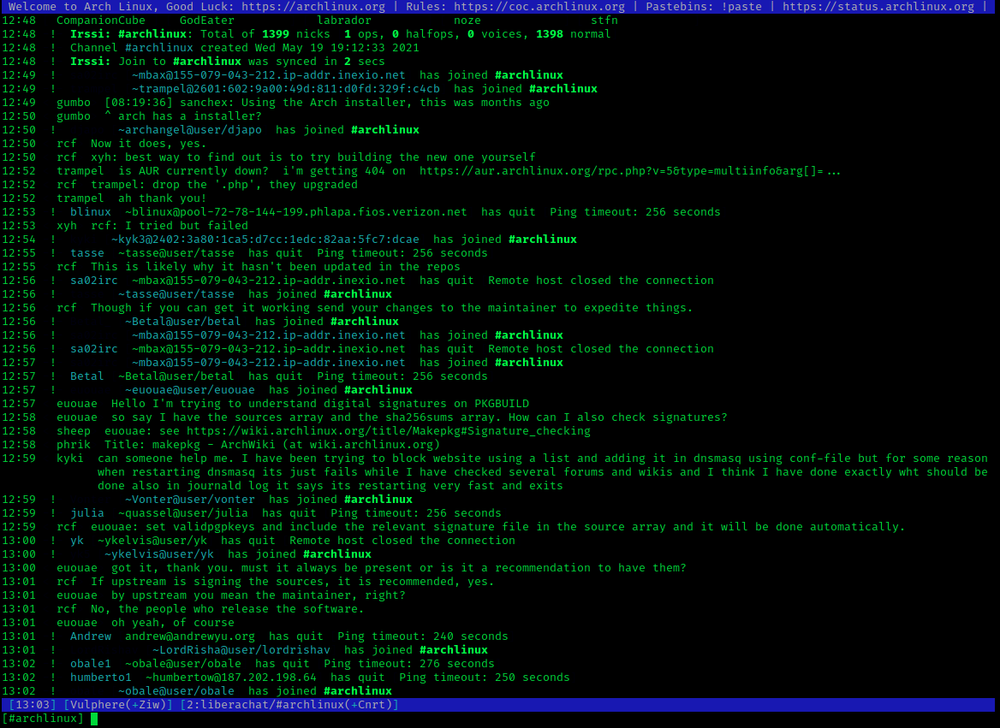

About
Internet Relay Chat (IRC) is a text-based chat system for instant messaging. IRC is designed for group communication in discussion forums, called channels, but also allows one-on-one communication via private messages as well as chat and data transfer, including file sharing.
Here are quick facts about IRC:
- IRC spread across the Internet in 1988, with about 40 servers worldwide by mid-1989.
- In 1991, IRC use surged during the Iraq-Kuwait conflict, providing up-to-date information through a functional IRC link.
- The Internet Relay Chat Protocol was defined in May 1993 in RFC 1459.
- By the end of 2009, the top 100 IRC networks served over half a million users at a time, with some 1500 servers worldwide.
- IRC has evolved with new server software adding features like proxy detection and encryption.
- Between 2003 and 2012, IRC saw a 60% decline in users.
- IRC became well known in 1991 during the Iraq-Kuwait conflict, providing real-time information through a functional IRC link.
Release History
During the summer of 1988, Jarkko Oikarinen (born 16 August 1967, in Kuusamo, Finland), a 2nd-year student in the Department of Electrical Engineering at the University of Oulu, Finland, was working at the University Department of Information Processing Science, where he administered the department’s Sun Unix server “tolsun.Oulu.fi”, running on a public access BBS (bulletin board system) called OuluBox. The work with server administration didn’t take all his time, so Jarkko started doing a communication program, which was meant to make OuluBox a little more usable. Partly inspired by Jyrki Kuoppala’s “rmsg” program for sending messages to people on other machines, and partly by Bitnet Relay Chat, Oikarinen decided to improve the existing multi-user chat program on OuluBox called MultiUser Talk (MUT) (which had a bad habit of not working correctly), itself based on the basic talk program then available on Unix computers. He called the resulting program IRC (for Internet Relay Chat) and first deployed it at the end of August 1988. The Internet Relay Chat Protocol was defined in May, 1993, in RFC 1459 of Jarkko Oikarinen and Darren Reed. It was mainly described as a protocol for group communication in discussion forums, called channels. It also allows one-to-one communication via private message and chat and data transfers via Direct Client-to-Client. In the 1990s, IRC gained many users until 2003, when users started declining as new chat platforms emerged. As of the end of 2009, the top 100 IRC networks served more than half a million users at a time, with hundreds of thousands of channels, operating on a total of some 1,500 servers worldwide.
The Purpose Of IRC
The primary purpose of IRC is to facilitate real-time text-based communication between users over the internet.
Some key reasons for using IRC include:
- Social Interaction: IRC allows users to join chat rooms, called channels, where they can discuss various topics and interests, make new friends, and interact with like-minded individuals from around the world.
- Technical Support: Many software and technology communities use IRC channels to provide real-time technical support and assistance. Users can ask questions, seek advice, and get help with problems related to specific software or technology topics.
- Collaboration: Developers and teams can use IRC channels for project coordination, brainstorming, and collaborative problem-solving. It provides an efficient way to communicate and share ideas in real-time.
- Information Sharing: Users can share news, announcements, and updates on specific subjects in IRC channels dedicated to those topics. This information can be disseminated quickly and easily among interested parties.
- Education: Some IRC channels are used for educational purposes, such as teaching programming languages, offering tutorials, or hosting workshops.
- Networking: Professionals and hobbyists can use IRC to connect with others in their field, share experiences, and discuss best practices.
- Entertainment: Users can participate in various forms of entertainment on IRC, such as trivia games, role-playing games, or simply engaging in casual conversations.
While IRC’s popularity has declined with the rise of newer communication platforms, it continues to serve as a valuable resource for real-time text communication in various contexts.
Technical information
IRC is an open protocol that uses TCP and, optionally, TLS. An IRC server can connect to other IRC servers to expand the IRC network. Users access IRC networks by connecting a client to a server. There are many client implementations, such as mIRC, HexChat and irssi, and server implementations, e.g. the original IRCd. Most IRC servers do not require users to register an account but a nickname is required before being connected. IRC was originally a plain text protocol (although later extended), which on request was assigned port 194/TCP by IANA. However, the de facto standard has always been to run IRC on 6667/TCP and nearby port numbers (for example TCP ports 6660–6669, 7000) to avoid having to run the IRCd software with root privileges. The protocol specified that characters were 8-bit but did not specify the character encoding the text was supposed to use. This can cause problems when users using different clients and/or different platforms want to converse.
How Does IRC Work
IRC infrastructure has four essential components through which users interact: Servers, Networks, Channels, and Clients. The network is a web of servers where users connect through clients—text-based applications designed to user channel interactions.
Here’s an overview of how IRC works:
- Client-Server Architecture: Users connect to an IRC network using a client (software) that communicates with IRC servers. Servers are responsible for managing channels and relaying messages between clients.
- Connection: To join an IRC network, a user must run an IRC client on their device and connect to an IRC server by providing the server’s address and port number. The client establishes a TCP connection with the server to facilitate communication.
- Connection Registration: When a client connects to an IRC server, it must provide a nickname (NICK) and user information (USER) to register its connection. The server may also require a password (PASS) for authentication. Once the connection is registered, the user is connected to the IRC network.
- Channels: IRC users communicate in virtual chat rooms called channels. Channels are identified by a prefix, usually a hash symbol (#), followed by the channel name (e.g., #channel_name). Users can join channels using the JOIN command and leave channels with the PART command.
- Messaging: Users can send messages within channels, which are then relayed by the server to all connected clients in that channel. For private messages, users can use the PRIVMSG command to send a message directly to another user.
- User and Channel Modes: Users and channels can have various modes that define their status or behavior within the IRC network. Channel operators (also known as “ops”) can modify channel modes to manage access, messaging, and other aspects of channel operation. Users can also set their own modes to indicate their status, such as being away or invisible.
- Ping-Pong Mechanism: To maintain active connections and detect inactive clients, IRC servers and clients use the PING and PONG commands. A server periodically sends a PING message to connected clients, which must reply with a PONG message to acknowledge their presence.
- Extensibility: The IRC protocol is extensible, allowing developers to create new commands, features, and services. These additions can enhance the user experience, provide additional functionality, or improve network administration.
IRC works by facilitating real-time text-based communication between users through a client-server architecture, allowing users to connect to channels, send messages, and interact with other users. The protocol’s simplicity, extensibility, and real-time communication capabilities have made it a popular choice for online chat and collaboration over the years.